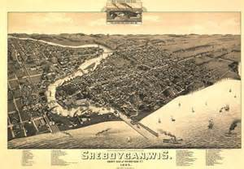
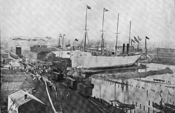
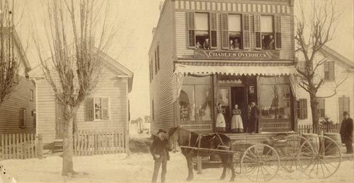
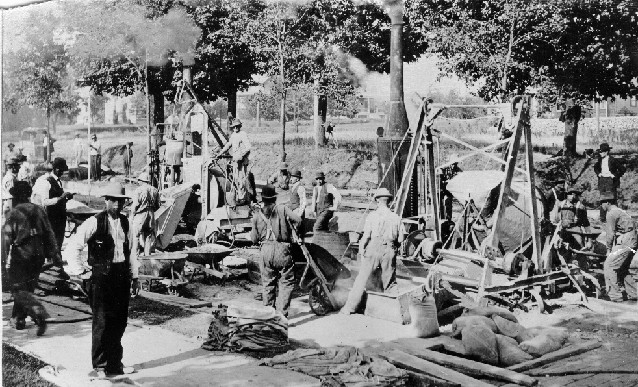

There are many theories as to how Sheboygan got its name, but the one most likely indicates Sheboygan was a Chippewa word meaning “passage or waterway between the lakes.” French explorers Jean Nicolett (1635) and Joliet and Marquette (1643) were probably the first “white men” to experience the shores of Sheboygan. Many years passed until in 1699, Father St. Cosme landed at a Pottawatomie village at the site of the Sheboygan River. Many more years passed before it was recorded that Wm. Farnsworth landed here in 1814. He moved on but returned in 1818 to establish a fur trading post, which he maintained for 14 years.
Wm. Paine and Colonel Oliver Crocker joined Farnsworth in 1822 and built a small saw mill and two log cabins. From these humble beginnings, more people made their way to the “water’s edge”. In 1834, a Mr. Harrison built a shanty on the south bank of the river and two years later, 1836, “The Sheboygan House”, Sheboygan’s first hotel was built. That same year saw the creation of a post office with Chas. Cole as Sheboygan’s first postmaster. Up to this point, Sheboygan was part of Brown County. December 7, 1836, Sheboygan County was created. As the population continued to grow, so did the need for schools. Sheboygan’s first schoolhouse, located on the east side of 8th St. between Niagara Ave. and Wisconsin Ave. was built. The year was 1837 and it had a total of 12 students.
The 1840s and 1850s brought more people and more developments. The first store was built in 1843. By 1845, Sheboygan built its first schooner, the “Pilot.” February 9, 1846 the Village of Sheboygan incorporated, with one of the first act’s to appropriate money for a bridge across the Sheboygan River. Streets were laid out and the first map of Sheboygan was recorded in 1848. The first hook and ladder fire department was formed in 1849. A new jail was built in 1851, but was replaced with a brick one in 1853. The city was officially chartered in 1853 with the first Mayor being H. Conklin. The main mode of transportation to get people and supplies to Sheboygan was still by boat, but in 1856, ground was broke by the Sheboygan/Mississippi Railroad Co., adding yet another way for Sheboygan to grow. Two years later, an all land mail route was established between Milwaukee and Sheboygan. Sheboygan’s population in 1837 was 36 people. By 1860, it has rocketed to 4271 citizens.
This sketch was done shortly after the Civil War. The plate of this sketch was originally owned by an early Sheboygan settler and lake captain, Captain Rudolph Rieboldt. The depiction, done about 1868, shows one railroad entering the city, The Sheboygan and Mississippi Railroad, with the depot on the south side of the river directly east of the Eighth Street bridge. The old Pennsylvania Avenue bridge called the “Shanghai Bridge” is also pictured. The population of Sheboygan at this time was about 5,000 people.
In the 1860s -1880s, Sheboygan’s growth continued. Many more schooners and ships were entering the harbor. Docks were built and dredging of the harbor took place. In 1864, the city enacted pay reparation for enlisted volunteers of the Civil War. The United States Telegraph Co. (later Western Union) built lines in the city. Gas lamps for street lighting were installed in 1872 and grade for 8th St. was established in 1875 from Michigan Ave. to the river. Forty-nine licenses were already issued in 1877 for saloons throughout Sheboygan. After many years of turmoil over changing from a wooden to iron 8th St. bridge, a new iron one was completed in November 1881. That same year, house and street numbering began, making Penn. Ave. the dividing line between North and South, no longer the river holding this honor. A small pox epidemic effected the city in 1882. Vaccinations were ordered throughout the city. Many firsts happened in 1885. the first horse drawn street cars rolled down the roads, the police force was established and the beginnings of the water works took place with a total of 6 hydrants in the city. The city got its first part-time city engineer, C.U. Boley in 1888. And in 1889, The Sheboygan Electric Co. started construction.
In 1887, Sheboygan launched it largest ship, the Helena, built at the Reibolt and Wolters shipyards located on the present C. Reiss Coal Company land. Even though the river was dredged for the launching, the stern was severely damaged from the force striking the river bed. The New Jersey bridge was erected in 1891.
By 1893, the population had grown to 23,000. Garbage collection for the city had begun. Electric street cars replaced horse drawn ones in 1895 and land was purchased for a new high school (Central Admin. Bldg.) in 1899. Fire destroyed Dock #1 at the C.Reiss Coal Co. in 1900. North 7th St. between Superior Ave. and Bluff Ave. was closed per a city ordinance from 2 to 4 o’clock daily for horse racing in the snow. history_overbeckThe city continued to expand throughout out the 1900s-1920s. Voting machines were first used in 1904. The first paved street took place in 1905 from Penn. Ave. to Superior Ave. on 7th St. That same year, Deland Lake Front Park land was suggested for park purposes and was deeded to the city in 1916. In 1907, St. Peter Claver Church’s cornerstone was laid and typhoid fever struck the city, the water works was blamed for polluted water. The city purchased the city water works in 1909 and began operation. A city “blackout” occurred in 1910 when a dispute happened between the city and the electric co. It lasted 5 days. Plans were drawn up in 1912 for a new city hall building and in 1915, the city purchased land to begin construction of a new garbage incinerator. The police department became “motorized” that same year. The office of building inspector began in 1916. Two parks were acquired in 1917, Vollrath Park was deeded to the city and the city purchased “Cole Woods” and renamed it Evergreen Park.
The above and below photos were taken in 1911. They show the paving of Bluff Avenue and North 6th Street. As can be seen, paving was a labor intense operation. The city’s Common Council changed greatly at the beginning of the 1920s, due to death and elections. Circulating throughout Sheboygan was a petition for a new post office (then located on the NW corner of 8th and Penn.) No action was taken. In 1924, Kiwanis Club donated land for Kiwanis Park. Funds for Memorial Hospital were bequeathed to the city in 1928. By 1931, street paving during the previous 10 year period showed 75.9 miles of 18 ft. pavement had been laid. Fountain Park was the proposed location for a new court house site in 1932, but opposition caused a new site to be chosen. All Water Dept. customers were metered in the city by 1933 and the next years saw tremendous growth and improvements to city sewers, pavements and curbing due to W.P.A. projects throughout the city. During this same period, the sewage disposal plant south of the city went before the council. The need for a new high school was recognized and by 1937 the cornerstone was laid for one. Bus transportation replaced street cars so the tracks were removed in 1939.
